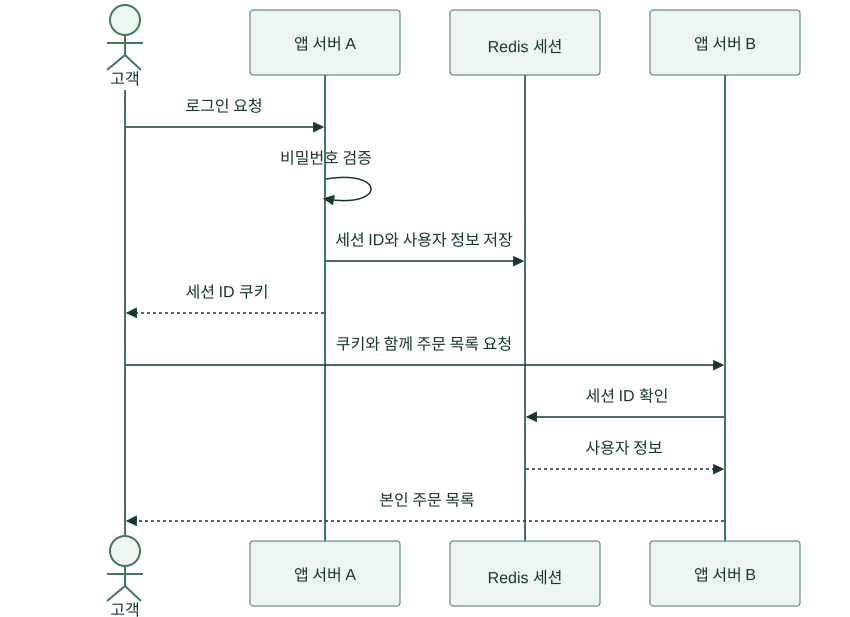
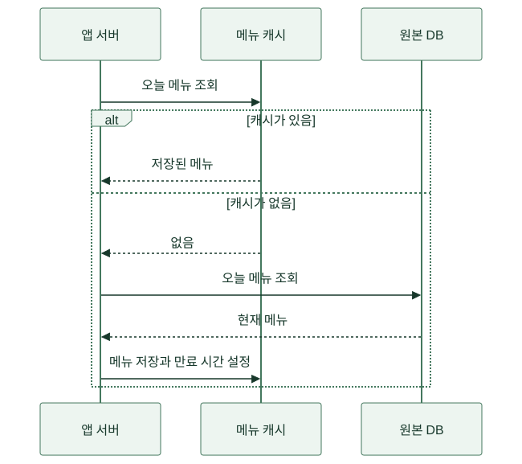
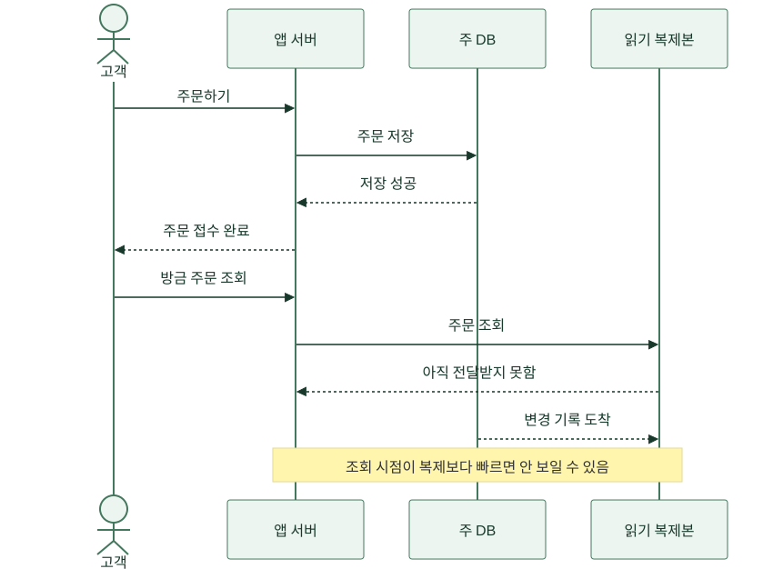
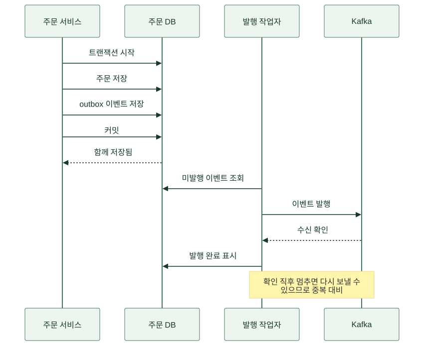

금요일 오전 11시 57분. 개발자 민서는 식당 주문 서비스 ‘한끼픽’의 화면을 새로고침했습니다. 조금 전까지 잘 열리던 메뉴판이 이제는 흰 화면으로 남았습니다. 곧 식당 사장 수진의 메시지가 왔습니다.
“손님은 주문했다는데 주방에는 안 보여요. 지금 주문을 다시 받으면 되나요?”
민서는 서버를 재시작하려다가 손을 멈췄습니다. 주문이 저장됐는지부터 알아야 했습니다. 저장된 주문을 고객이 다시 보내면 같은 도시락을 두 번 만들 수 있기 때문입니다. 이 이야기는 바로 그 순간에서 출발해, 서버 한 대가 여러 시스템으로 나뉘기까지의 선택을 따라갑니다.
등장인물과 숫자, 장애는 설명을 위한 가상 설정입니다. 실제 서비스의 성장 공식이나 특정 제품의 성능 측정 결과는 아닙니다. 여기서 서버는 요청을 받아 일을 처리하는 컴퓨터 또는 실행 환경이고, DB는 주문 같은 기록을 오래 보관하는 데이터베이스입니다.
1. 첫 주 — 한 대에 전부 넣어도 잘 돌아갔다
처음 한끼픽을 쓰는 식당은 한 곳이었습니다. 고객이 브라우저에서 메뉴를 고르면 프로그램이 주문을 DB에 저장하고, 사장님 화면에 주문 목록을 보여줬습니다. 민서는 비용과 관리할 일을 줄이려고 웹 요청을 받는 부분, 주문 프로그램, DB를 한 가상 서버에 설치했습니다. 웹서버 한 대로 시작했다는 말이 이 글에서는 이 구성을 뜻합니다. 모든 서비스가 처음부터 이렇게 배치해야 한다는 뜻은 아닙니다.
하루 주문이 적을 때는 이 구성이 편했습니다. 고장 난 곳을 찾을 때 확인할 컴퓨터가 하나였고, 새 프로그램을 올리는 일도 단순했습니다. 브라우저와 서버 사이는 내용을 암호화해 주고받는 HTTPS로 연결했습니다. 다만 프로그램을 재시작하면 주문 화면도 잠시 멈췄습니다. DB 파일을 같은 서버에만 두면 서버를 잃었을 때 주문 기록까지 잃을 수 있어, 민서는 처음부터 별도 위치에 백업을 두고 복원해 봤습니다.
{kind=link}

그림 크게 보기 ↗상자 안에 함께 있다는 것은 서로 다른 역할이 없다는 뜻이 아닙니다. 웹 요청을 받는 일, 주문 규칙을 실행하는 일, 기록을 저장하는 일은 이미 달랐습니다. 단지 같은 컴퓨터의 자원을 나눠 쓰고 있었을 뿐입니다. 이 구분을 해 두면 나중에 무엇을 따로 옮길지 생각하기 쉽습니다.
2. 첫 행사 — 사람 수보다 어디서 기다리는지가 중요했다
학교 축제 계정에 한끼픽이 소개되자 짧은 시간에 주문이 몰렸습니다. 민서는 처음에 “접속자가 많으니 서버를 더 사면 되겠지”라고 생각했습니다. 그런데 운영 담당 지후가 먼저 물었습니다. “프로그램이 계산하느라 바빠요, 아니면 DB 답을 기다려요?”
같이 느리게 보여도 원인은 다를 수 있습니다. 계산을 수행하는 CPU가 바쁘면 계산할 여력이 부족할 수 있고, DB 연결을 기다리면 프로그램을 늘려도 기다리는 줄만 길어질 수 있습니다. 외부 결제사의 응답이 늦는 경우에는 우리 서버를 늘려도 상대방의 응답 시간이 줄지 않습니다. 팀은 요청이 들어온 시각, DB 조회 시간, 외부 요청 시간, 응답 시각을 기록했습니다. 비밀번호나 결제정보를 로그에 남기지는 않았습니다.
아래는 그때의 가상 관측표입니다. 같은 조건의 부하 시험에서 여러 구간을 함께 살펴봤으며, 각 행 하나만으로 원인을 확정하지 않았습니다.
| 관측한 값 | 이 상황에서 보인 모습 | 먼저 확인한 일 |
|---|---|---|
| 요청 처리 시간의 95백분위수 | 100개 중 약 95개가 끝나는 지점이 3초 | 평균에 가려진 느린 요청 추적 |
| 프로그램 CPU | 점심시간에 계속 높음 | 이미지 변환과 주문 처리의 경쟁 확인 |
| DB 연결 대기 | 초반에는 짧음 | 서버 증가 뒤에도 같은지 비교 |
| 오류 비율 | 요청이 몰릴 때 함께 증가 | 시간 초과인지 실제 저장 실패인지 구분 |
민서는 메뉴 사진을 요청할 때마다 크기를 바꾸던 코드를 먼저 고쳤습니다. 이미 만든 작은 사진을 재사용하니 부담이 줄었습니다. 그다음 CPU를 더 제공하는 큰 서버로 바꾸는 방법과, 프로그램을 여러 서버에 나누는 방법을 비교했습니다. 전자는 구성이 단순하고 후자는 일부 서버가 멈춰도 나머지가 처리할 수 있습니다. 팀은 행사 때 한 대를 재시작해도 주문을 계속 받고 싶었으므로 여러 대로 나누기로 했습니다.
3. 둘째 달 — 서버를 N대로 늘렸더니 로그인이 풀렸다
팀은 DB를 별도 서버로 옮기고 주문 프로그램을 두 대에 실행했습니다. 앞에는 로드밸런서를 두었습니다. 로드밸런서는 도착한 요청을 처리 가능한 서버로 나눠 보내는 역할을 합니다. 그림의 N대는 두 대든 다섯 대든 같은 역할의 실행 환경을 여러 개 둘 수 있다는 뜻입니다. 처음부터 특정 대수가 정답인 것은 아닙니다.
{kind=link}

그림 크게 보기 ↗그런데 테스트하던 수진이 항의했습니다. “분명히 로그인했는데 메뉴를 누르면 다시 로그인하래요.” 서버 A는 로그인 성공을 자기 메모리에 기록했습니다. 다음 요청이 서버 B로 가자 B는 그 기록을 몰랐습니다. 서버 수는 늘었지만, 로그인 상태는 나누지 않았던 것입니다.
한 고객을 계속 같은 서버로 보내는 방법도 있었습니다. 이를 스티키 세션이라고 부릅니다. 당장의 증상을 줄일 수 있지만, 그 서버가 멈추거나 교체되면 서버 안의 로그인 기록도 함께 문제가 됩니다. 팀은 어느 서버가 요청을 받아도 로그인 상태를 확인하도록 공유 저장소를 두기로 했습니다.
4. Redis 첫 번째 용도 — 어느 서버에서도 로그인을 알아보게 한다
세션은 로그인 뒤의 사용자를 서버가 알아보기 위해 유지하는 상태입니다. 브라우저에는 예측하기 어려운 세션 ID를 쿠키로 보내고, 서버는 그 ID에 연결된 사용자 정보를 확인할 수 있습니다. 한끼픽은 이 세션 정보를 Redis에 보관했습니다. Redis는 메모리를 중심으로 빠르게 값을 읽고 쓰는 저장소이며, 공유 세션은 여러 사용 방식 중 하나입니다. Redis 세션 저장소 설명도 이런 서버 간 공유를 다룹니다.
{kind=link}

그림 크게 보기 ↗서버 A가 기억하던 내용을 밖으로 옮기니 A를 교체해도 B가 같은 세션을 확인할 수 있었습니다. 하지만 이제 Redis가 응답하지 않을 때의 정책도 필요했습니다. 로그인 확인에 실패했다고 아무나 주문 목록을 보게 할 수는 없습니다. 팀은 인증이 필요한 요청을 막고 안내를 보여주도록 했습니다. Redis 접속 제한, 만료 시간, 장애 감지와 복구도 운영 항목에 추가했습니다.
공유 저장소 하나를 두었다고 그 자체가 고장 나지 않는 것은 아닙니다. 복제와 장애 전환을 어떻게 구성할지, 장애 때 세션을 잃으면 재로그인을 허용할지 정해야 합니다. “앱 서버는 쉽게 늘릴 수 있다”는 장점을 얻는 대신, 공유 상태를 지키는 책임이 생긴 것입니다.
5. Redis 두 번째 용도 — 같은 메뉴를 매번 DB에서 읽지 않는다
식당이 늘자 메뉴 조회가 DB를 바쁘게 만들었습니다. 같은 점심 메뉴를 수천 번 읽고 있었고 메뉴 자체는 그렇게 자주 바뀌지 않았습니다. 팀은 자주 읽는 결과의 복사본을 가까운 저장소에 두는 캐시를 적용했습니다. 세션과 캐시는 같은 Redis 제품을 사용할 수 있지만, 없어졌을 때의 영향은 다르므로 별도의 용량·만료·장애 정책으로 다뤘습니다.
민서는 먼저 캐시에서 메뉴를 찾고, 없으면 DB를 읽은 뒤 결과를 캐시에 넣었습니다. 이 방식을 cache-aside라고 부릅니다. 캐시는 원본을 대신하는 영구 기록이 아니라 다시 만들 수 있는 복사본으로 사용했습니다. Redis의 cache-aside 예제에서 같은 읽기 순서를 확인할 수 있습니다.
{kind=link}

그림 크게 보기 ↗다음 날 수진이 가격을 바꿨는데 고객 화면에는 옛 가격이 남았습니다. 캐시에 넣어 둔 복사본 때문이었습니다. 팀은 메뉴 수정 뒤 관련 캐시를 지우고, 일정 시간이 지나면 자동으로 만료되게 했습니다. 만료 시간은 TTL이라고 부릅니다. 단순 삭제만으로 모든 동시 갱신 문제가 사라지지는 않으므로, 메뉴 버전과 갱신 중 요청도 시험했습니다.
특히 결제 금액과 재고 판정은 캐시 화면을 그대로 믿지 않았습니다. 고객에게 보여준 정보가 낡을 수 있기 때문입니다. 주문을 확정할 때 원본 가격과 판매 가능 수량을 다시 확인하고, 달라졌다면 고객에게 알려 동의를 받았습니다. 캐시를 쓰면 빨라질 수 있지만 어느 정도의 오래된 정보를 허용할지 기능별로 정해야 합니다.
한 번은 인기 메뉴 캐시가 동시에 만료되자 요청이 한꺼번에 DB로 몰렸습니다. 팀은 만료 시각을 조금씩 분산하고 같은 메뉴를 여러 요청이 동시에 재생성하지 않도록 제어했습니다. Redis가 멈췄을 때 모든 요청을 무제한으로 DB에 보내는 것도 막았습니다. 빠른 복사본이 사라지는 순간, 원본 저장소가 버틸 수 있는지까지 생각해야 했습니다.
6. DB 복제 — 방금 한 주문이 없다고요?
캐시를 적용한 뒤에도 관리자 통계와 주문 내역 조회가 DB 자원을 많이 썼습니다. 팀은 먼저 필요한 인덱스와 느린 쿼리를 점검했습니다. 인덱스는 조건에 맞는 행을 빨리 찾기 위한 보조 구조입니다. 불필요하게 큰 조회를 줄인 뒤에도 읽기 부담이 남아, 쓰기를 받는 주 DB와 읽기용 복제본을 나눴습니다.
복제는 주 DB의 변경을 다른 DB에도 전달하는 일입니다. 이 이야기에서는 PostgreSQL의 비동기 스트리밍 복제를 사용합니다. 주 DB에서 저장이 끝났더라도 복제본에 보이기까지 시간이 걸릴 수 있습니다. 이 차이가 복제 지연입니다. PostgreSQL 공식 문서는 비동기 복제의 지연과 장애 시 데이터 손실 가능성을 설명합니다.
{kind=link}

그림 크게 보기 ↗팀은 “주문이 사라졌다”는 문의를 받고 저장 오류부터 의심했습니다. 실제로는 주 DB에 주문이 있었고 복제본만 늦었습니다. 그래서 주문 직후의 확인 화면과 결제 상태 확인은 주 DB에서 읽도록 경로를 정했습니다. 잠시 늦어도 되는 집계는 복제본을 사용하고, 화면에 기준 시각을 표시했습니다.
| 읽는 목적 | 이 이야기의 선택 | 이유 |
|---|---|---|
| 방금 만든 주문 확인 | 주 DB | 저장 직후 안 보이는 혼란 방지 |
| 결제·취소 가능 여부 | 권위 있는 현재 상태 확인 | 낡은 값으로 돈과 상태를 바꾸지 않음 |
| 지난달 판매 통계 | 읽기 복제본 | 약간의 지연을 허용하고 읽기 부담 분리 |
| 인기 메뉴 소개 | 캐시 | 재사용할 수 있는 조회 결과 |
복제본이 생겼다고 쓰기 성능이 자동으로 늘지는 않습니다. 이 구성의 주문 저장은 여전히 주 DB가 맡습니다. 실수로 삭제한 행도 복제될 수 있으므로 복제를 백업으로 보지도 않았습니다. 주 DB 장애 때 누가 복제본을 승격하고, 이전 주 DB의 쓰기를 어떻게 막을지 정해야 했습니다. 새로 얻은 여유만큼 운영 절차도 길어졌습니다.
7. 주문은 저장됐는데 알림 때문에 화면이 멈췄다
다음 병목은 DB가 아니었습니다. 주문 처리 코드가 DB 저장 뒤 문자 발송 업체의 응답까지 기다렸습니다. 문자 업체가 느려지면 주문 완료 화면도 늦어졌습니다. 고객은 실패한 줄 알고 다시 눌렀습니다.
팀은 주문 접수와 문자 발송이 같은 순간에 끝나야 하는지 물었습니다. 주문은 먼저 확실히 저장하고, 문자는 뒤에서 보내도 됐습니다. 고객이 기다리는 경로에서 당장 끝나지 않아도 되는 일을 분리하는 비동기 처리를 선택했습니다. 처음에는 DB에 발송 대기 작업을 남기고 별도 작업자가 처리했습니다. 단순한 작업 하나 때문에 곧바로 Kafka 클러스터를 운영할 이유는 없었습니다.
몇 달 뒤 알림뿐 아니라 정산 자료, 매출 분석, 가게 화면 갱신이 주문 확정 사실을 각자 필요로 했습니다. 각 기능은 처리 속도도 달랐고, 장애 복구 뒤 지나간 기록을 다시 읽고 싶어 했습니다. 이 요구가 생긴 시점에 팀은 Kafka를 검토했습니다. Kafka는 사건 기록을 보관하고 여러 소비자가 각자의 위치에서 읽을 수 있게 하는 이벤트 스트리밍 시스템입니다.
8. Kafka — 알림 담당과 분석 담당이 같은 사건을 따로 읽는다
주문 서비스는 “주문 O-42가 확정됐다”는 이벤트를 발행합니다. 이벤트는 이미 일어난 사실을 나타내는 기록입니다. 알림과 분석은 서로 다른 소비자 그룹으로 이 기록을 읽습니다. 한 그룹 안의 여러 작업자는 담당 파티션을 나눠 처리합니다. 토픽은 주문 확정처럼 같은 종류의 이벤트를 모아 두는 이름입니다. 파티션은 하나의 토픽에 속한 순서 있는 기록 구간이며, 순서는 전체 토픽이 아니라 파티션 안에서 다룹니다. Kafka 설계 문서가 이 구분을 설명합니다.
{kind=link}

그림 크게 보기 ↗알림 작업이 늦어져도 분석 소비자는 자기 속도로 처리할 수 있었습니다. 대신 팀은 소비 지연을 감시해야 했습니다. 기록이 쌓여만 가면 주문 완료 화면은 빨라도 고객 알림이 한 시간 뒤에 도착할 수 있습니다. Kafka에 기록을 얼마나 오래 보관할지와 재처리 가능한 범위도 정했습니다.
“Kafka를 쓰면 한 번만 처리되는 거죠?”라는 질문도 나왔습니다. 팀은 외부 문자 발송이나 DB 변경까지 자동으로 정확히 한 번 보장된다고 가정하지 않았습니다. 장애 뒤 같은 이벤트를 다시 받을 수 있으므로 이벤트 ID를 기준으로 처리 여부를 기록하고, 같은 작업이 반복돼도 결과가 잘못 늘어나지 않게 했습니다. 이런 성질을 멱등성이라고 합니다. 문자 업체도 중복 방지 키를 지원하는지 확인해야 했습니다.
9. 두 곳에 기록하려니 한쪽만 성공했다
어느 날 주문은 DB에 저장됐지만 이벤트가 Kafka에 전달되지 않았습니다. DB 저장 직후 프로그램이 멈췄기 때문입니다. 반대로 이벤트부터 보내면 실제 주문 저장이 실패했는데 알림만 나갈 수 있습니다. 두 시스템에 연달아 쓰는 코드는 두 작업을 하나로 묶어 주지 않았습니다.
팀은 주문과 ‘보낼 이벤트’를 같은 DB 트랜잭션으로 저장했습니다. 트랜잭션은 함께 성공하거나 함께 취소해야 하는 DB 작업의 묶음입니다. 별도 발행 작업자가 보낼 이벤트를 읽어 Kafka에 전달했습니다. 이 발행 대기 기록을 outbox라고 부릅니다. Transactional outbox 패턴은 이 문제와 해법, 중복 발행 가능성을 함께 설명합니다.
{kind=link}

그림 크게 보기 ↗여기서도 “발행하고 완료 표시하기 직전”에 멈출 수 있습니다. 따라서 outbox를 넣었다고 중복 처리가 사라지지는 않습니다. 발행 누락을 줄이는 방법과 소비자의 중복 방지는 서로 다른 책임입니다. 팀은 주문 번호, 이벤트 ID, 요청 ID를 로그에서 이어 볼 수 있게 해 어느 단계에서 멈췄는지 찾았습니다.
이 별도 그림의 내용은 한국어이며, 확대·검색·내보내기 같은 뷰어의 고정 조작 UI와 문서 언어 설정은 영어입니다. 본문 속 그림만으로도 이야기의 흐름을 따라갈 수 있습니다.
10. MSA — 사람이 나뉘었는데 배포는 여전히 한 덩어리였다
시간이 지나 주문팀, 가게 관리팀, 알림팀이 생겼습니다. 프로그램은 하나여서 알림 문구를 바꾸는 배포도 주문팀의 일정과 맞춰야 했습니다. 알림 기능의 실수로 주문 프로그램 전체가 재시작되는 일도 있었습니다. 팀은 먼저 한 프로그램 안에서 모듈의 책임과 의존 관계를 정리했습니다. 코드 경계가 흐린 상태로 서버만 나누면 서로 호출하는 복잡함까지 더해질 수 있기 때문입니다.
알림 모듈은 이미 이벤트를 받아 동작했고 주문 확정에 직접 참여하지 않았습니다. 독립시키기 좋은 첫 후보였습니다. 팀은 알림 코드를 별도 서비스로 배포하고, 발송 상태도 알림 서비스가 관리하도록 옮겼습니다. 이렇게 업무 책임별 서비스를 독립적으로 개발·배포하는 접근을 마이크로서비스 아키텍처, MSA라고 부릅니다. Microsoft의 아키텍처 설명은 독립 배포의 이점과 분산 시스템의 복잡성을 함께 다룹니다.
{kind=link}

그림 크게 보기 ↗알림팀은 독립적으로 배포할 수 있게 됐습니다. 하지만 이벤트 필드 이름을 마음대로 바꾸면 다른 서비스가 깨졌습니다. 네트워크 시간 초과, 재시도, 중복, 데이터가 서로 다른 시각에 반영되는 문제도 생겼습니다. 각 서비스가 자기 DB를 가진다는 것은 다른 팀 DB의 테이블을 몰래 수정하지 않는다는 책임까지 포함합니다.
팀은 주문·결제처럼 강하게 맞물린 부분은 성급히 나누지 않았습니다. 서비스 분리로 얻는 독립성보다 운영 부담이 크면 모듈을 잘 나눈 하나의 프로그램이 더 적합할 수 있습니다. MSA는 서버 수가 어느 숫자를 넘으면 받아야 하는 상장이 아니었습니다.
11. 다음 행사 — 고장 나지 않기를 빌지 않고 연습했다
행사 전날 지후가 앱 서버 한 대를 의도적으로 중지했습니다. 로드밸런서는 건강 확인에 실패한 서버로 새 요청을 보내지 않았습니다. 진행 중 요청은 실패할 수 있으므로 고객의 재시도와 서버의 중복 주문 방지도 함께 시험했습니다. 장바구니가 앱 서버의 로컬 파일에 남아 있지 않은지도 확인했습니다.
다음에는 Redis 응답을 늦추고, DB 복제 지연을 만들고, 알림 소비자를 잠시 멈췄습니다. 팀은 “전체 사이트가 정상”이라는 초록색 표시 하나 대신 고객이 주문을 끝낼 수 있는지, 접수된 주문이 주방에 전달되는지, 알림이 얼마나 늦는지를 봤습니다. 재시도는 횟수와 간격을 제한했습니다. 장애 때 무제한 재시도하면 이미 힘든 상대에게 요청을 더 퍼붓게 됩니다.
{kind=link}

그림 크게 보기 ↗이 그림의 주문 처리와 알림은 접수 뒤 따로 진행하는 경로입니다. 알림 실패만으로 이미 접수된 주문을 취소하지 않습니다. 도식이 현실의 모든 상태를 담지는 않으므로, 구현에서는 주문 상태와 알림 상태를 별도로 기록합니다. 그림은 그 두 책임이 다르다는 사실을 읽기 위한 것입니다.
12. 마지막 회의 — 무엇을 넣었나보다 무엇을 해결했나
다음 행사에서 팀은 여러 서버와 저장소를 운영했습니다. 서버 한 대였을 때보다 설명해야 할 구성은 많아졌지만, 선택의 이유를 기억하고 있었습니다. 메뉴가 느리다고 Kafka를 넣은 것이 아니고, 주문이 많다고 곧바로 MSA로 나눈 것도 아니었습니다.
| 선택 | 실제로 해결하려던 문제 | 새로 책임져야 하는 일 | 아직 필요 없을 수 있는 때 |
|---|---|---|---|
| 앱 서버 N대 | 계산 부담과 한 대 중단의 영향 | 상태 공유, 배포, 연결 수 관리 | 한 대에 여유가 있고 짧은 중단을 허용할 때 |
| Redis 세션 | 서버마다 로그인 기록이 다름 | 만료, 접근 제한, 장애 시 정책 | 다른 세션 방식으로 요구를 충족할 때 |
| Redis 캐시 | 반복 조회 부담 | 오래된 값, 무효화, 몰림 방지 | 원본 조회가 충분히 빠를 때 |
| DB 읽기 복제 | 읽기 부하 분리 | 지연, 조회 경로, 승격, 백업 | 쿼리 개선만으로 충분할 때 |
| Kafka | 여러 기능의 독립 소비와 재처리 | 중복, 순서, 보관, 소비 지연 | 단순 작업 큐로 충분할 때 |
| MSA | 팀별 독립 배포와 장애 범위 분리 | 계약, 관측, 네트워크 실패, 데이터 소유 | 작은 팀이 한 프로그램으로 잘 운영할 때 |
수진은 여전히 Redis라는 이름을 몰랐습니다. 대신 주문을 누른 고객에게 무엇을 안내해야 하는지, 주방에 주문이 안 보이면 어떤 번호를 전달해야 하는지는 알았습니다. 민서에게도 그것이 더 중요한 변화였습니다. 시스템아키텍처를 설계한다는 것은 상자와 화살표를 늘리는 일이 아니라, 사람들이 일을 계속할 수 있도록 구조를 선택하고 그 선택의 책임을 감당하는 일이었습니다.
다시 첫 장면으로 돌아가 보세요. 주문 화면이 멈췄을 때 이제 첫 질문은 “서버 몇 대 더 살까요?”가 아닙니다. “어떤 요청이 어디에서 기다리고 있으며, 저장은 어디까지 끝났나요?”입니다. 그 답이 다음 구조를 결정합니다.